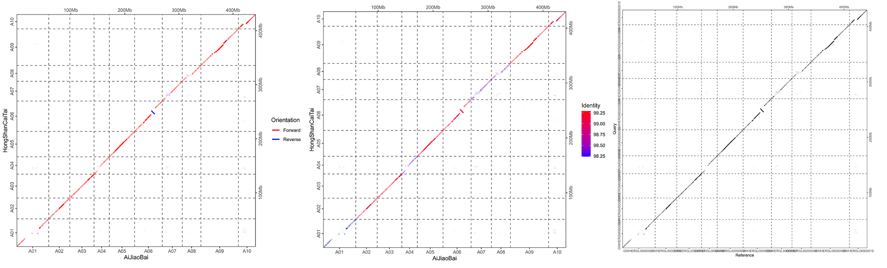

The MUMmer system and the genome sequence aligner nucmer included within it are among the most widely used alignment packages in genomics.Marçais, Guillaume et al., 2018, PLoS computational biology
mummer 是基因组序列比对的常用工具之一。对比对结果进行可视化可以让我们直观的看到序列之间的共线性区域或结构变异，使用 mummer 工具包中自带的 mummerplot 可以方便的对比对结果可视化，但是其颜值可能并不突出。dotPlotly 中的 mummerCoordsDotPlotly.R 也是一个可以对 mummer 比对结果进行可视化的优秀工具，并且它在一些基因组研究的文章中被使用。但是这个软件的有些方便不太符合我的需求：
软件默认按照 query 染色体的长度进行排序，而我更希望按照染色体在基因组中的顺序排序；
当它将 identity 按照颜色进行展示时使用了黄色 ，在白色背景中并不明显，改用红色 或蓝色 可以更加醒目；
不能用不同颜色展示不同的比对方向；
图片中染色体 ID 的位置并没有出现在染色体的中间而是在末尾；
不能自定义图片显示出来的 ID，例如有的染色体中的 ID 像是 chromosome1 这种超长的形式，而你只想写成 chr1 这样的简短形式；
而今天介绍一个更符合我需求的 mummer 可视化工具 mummerCoordsPlot.R 。这个工具实际上是对 mummerCoordsDotPlotly.R 的模仿，只是对上面描述的一些问题进行了修改，而且这个工具的作者更习惯于使用 tidyverse，所以大量使用 tidyverse 语法写了这个工具。
使用方法
工具下载
该工具可以在在 github 上下载，下载后是一个叫 SomeScript 的文件夹，里面有 mummerCoordsPlot.R 这个工具，并且有一个 example_data 的子文件夹，里面有演示用的相应数据。
1 2 # 下载
数据下载
为了演示 mummerCoordsPlot.R 的使用方法，我们首先在国家生物信息中心 下载两个白菜（Brassica rapa L.）T2T 的基因组 ，每个基因组中都包括 10 条核基因组染色体 以及叶绿体 和线粒体 基因组。
1 2 3 4 # 两个基因组分别对应 AiJiaoBai 和 HongShanCaiTai 这两个品种
数据处理
下载并解压两个基因组以后，使用 mummer 中的 nucmer 工具进行比对，进而用 delta-filter 工具过滤比对结果，最后使用 show-coords 工具将 delta 格式转换为 coords 格式。不过在前面工具下载那一步的已经同时下载了一个比对好的 coords 文件（./SomeScript/example_data/mummerCoordsPlot/input/example.coords），其实可以省略这一步。
1 2 3 4 5 6 7 8 9 10 11 12 # 设置 PATH 变量（optional） # 设置变量 # 比对
比对结果可视化
首先准备一个 reference 和 query 的染色体 ID 的文件，第一列是下载的基因组中的 ID 形式，正如下面看到的那样，上传到数据库的基因组染色体 ID 命名不符合我们的需要，因此第二列对应的位置上是我们实际想展示的 ID 形式。并且下载的基因组中还有还有两个细胞器基因组序列，我们并不想展示，因此在这个文件中只指定了 10 条核基因组染色体。
1 2 3 4 5 6 7 8 9 10 GWHERGL00000001 A01
另一个是准备染色体长度的文件，同样是两列，染色体 ID 和 对应长度。但实际上我们一般并不需要这个文件，默认将比对结果中每个染色体最大的 alignment 的位置作为染色体长度。
1 2 3 4 5 6 GWHERGL00000001 59205763
准备好所有输入文件以后就可以运行 mummerCoordsPlot.R 并得到比对可视化结果。
1 2 3 4 5 6 7 8 9 10 11 12 13 14 15 16 17 18 19 20 21 22 # 根据比对方向设定颜色 # 根据 identity 设定颜色 # 使用默认参数

数据来源
Zhou, Yifan et al. “The complexity of structural variations in Brassica rapa revealed by assembly of two complete T2T genomes.” Science bulletin vol. 69,15 (2024): 2346-2351. doi:10.1016/j.scib.2024.03.030